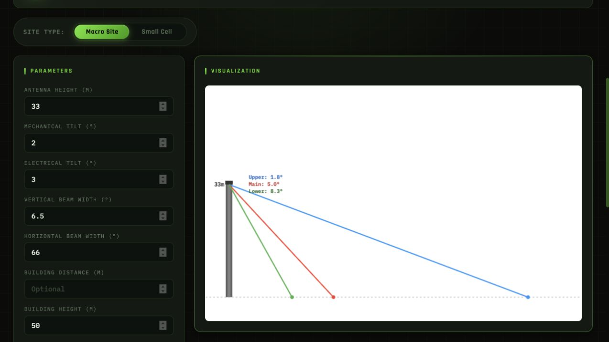
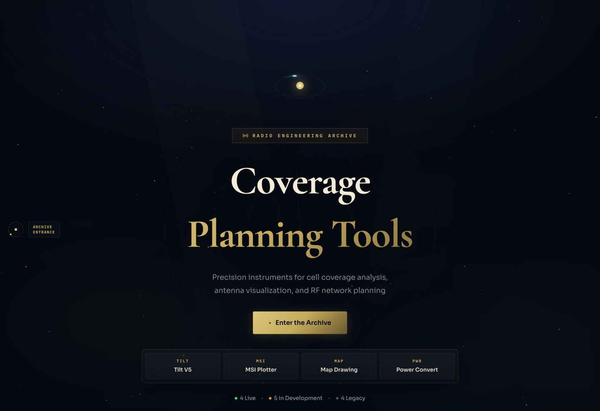
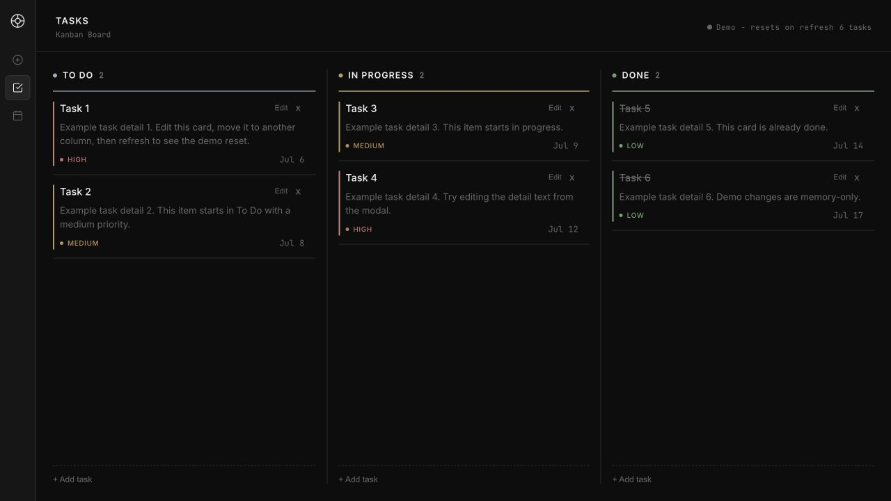
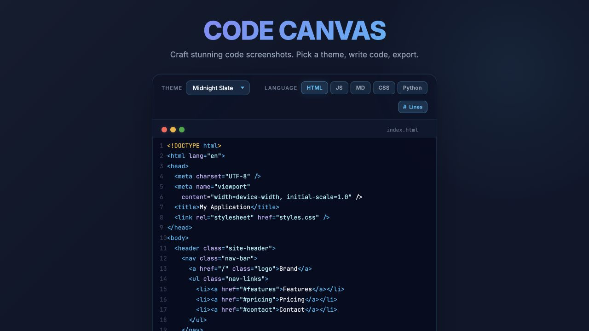

01 / ENGINEERINGFEATURED
Radio Planning
Tools
Precision instruments for cell coverage, antenna visualization, and RF planning. Built from the engineering problems I work with.
Open Radio Planning ToolsTHE CLOCKWORK LIBRARY
Hello, I’m
Telecom engineer. Data explorer. Tool builder.
I turn complex engineering data into clearer decisions and practical tools.

Where gears & graphs meet code.
01 / THE CELESTIAL ARCHIVE
Small tools. Practical problems.
A collection of things I’ve built.

Precision instruments for cell coverage, antenna visualization, and RF planning. Built from the engineering problems I work with.
Open Radio Planning Tools
A focused space to organize tasks and see what’s next. Explore the task board and calendar with sample data.
Try Task Planner
Turn code into something worth sharing. Style syntax-highlighted snippets, tune the layout, and export the result.
Open CodeSnippet02 / BEHIND THE WORK
I’m Beer — Chatchon. My work sits between telecommunications, data, and software. At AIS in Thailand, I support 4G and 5G network planning and optimization.
When the tools don’t fit the workflow, I enjoy building something that does. That curiosity is also leading me further into data analytics.
I graduated in Electrical Engineering from Chulalongkorn University, with a focus on communications and telecommunications. Today, I work at AIS (Advanced Info Service Public Company Limited) in Thailand, where I support 4G and 5G network planning and optimization.
Although my role is in telecommunications, much of the work I enjoy most involves data. I work with information from different sources, clean and validate datasets, analyse KPI trends, and create visualizations to support engineering decisions. Through both assigned and self-initiated projects, I have become increasingly interested in how data can be structured and used to solve practical problems.
When existing tools do not fit my team’s workflow, I build my own. Using Python, pandas, Excel, Power Query, QGIS, and Power BI, I have created tools for data processing, geospatial visualization, antenna analysis, KPI analysis, and workflow automation. My Radio Planning Tools project grew from this interest in combining technical knowledge, data, and software to make everyday work more effective.
I am still connected to telecommunications, but I am increasingly interested in developing further in data analytics. I enjoy taking complex information, making it more structured and understandable, and creating practical tools for the people who use them. I am also currently developing my SQL skills as I continue building toward this direction.
MY WORKBENCH
Currently developing my SQL skills.
03 / THE OPERATING ATLAS
Meet CONY, my personal AI operating team. Explore how I organize specialized agents for research, design, development, and review.
Explore the AI team CONYCoordinates
CONYCoordinates MUSEDesigns
MUSEDesigns ORINBuilds
ORINBuilds NYXReviews
NYXReviews04 / ON THE HORIZON
A little room for creative experiments. More to explore in time.
THE NEXT CHAPTER
Explore the code, exchange an idea, or just say hello.